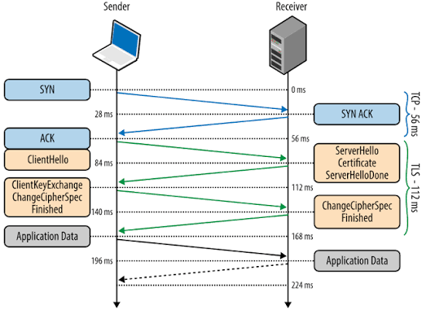

Según AWS e IBM, la criptografía transforma datos legibles en un formato ininteligible mediante algoritmos matemáticos. Es el pilar fundamental de la privacidad digital moderna.
Criptografía de Clave Secreta.
Estos algoritmos operan bajo un principio sencillo: se utiliza la misma clave tanto para cifrar como para descifrar la información. Es como tener una caja fuerte donde la misma llave que la cierra es la única que puede abrirla.
La distribución de claves. ¿Cómo le envías la clave secreta inicial al destinatario de forma segura? Si alguien la intercepta en el camino, la seguridad colapsa.
Criptografía de Clave Pública.
Estos algoritmos utilizan un par de claves matemáticamente vinculadas: una Clave Pública (que puede compartirse con todo el mundo) y una Clave Privada (que el propietario debe guardar celosamente y nunca compartir).
Matemáticamente tan complejos que resultan miles de veces más lentos. No son viables para flujos de datos en tiempo real.
Trabajando en equipo en la red real.
En los protocolos de seguridad de red reales (como HTTPS/TLS o IPsec), rara vez se usa uno solo. Se combinan para aprovechar los puntos fuertes de cada uno:
Se utiliza criptografía asimétrica (como Diffie-Hellman o RSA) para autenticar a las partes y negociar de forma completamente segura una clave secreta a través de la red abierta de internet.
Una vez que ambos extremos tienen la misma clave secreta compartida, descartan el canal asimétrico y usan criptografía simétrica (como AES) para cifrar el resto de la comunicación a muy alta velocidad.
| Característica | Algoritmos Simétricos | Algoritmos Asimétricos |
|---|---|---|
| Claves | 1 (Compartida) | 2 (Pública y Privada) |
| Velocidad | Muy alta | Muy baja |
| Pilar de Seguridad | Confidencialidad | Confidencialidad, Autenticación, No repudio |
| Caso de uso típico | Cifrado masivo de datos | Intercambio de claves y Firmas digitales |
